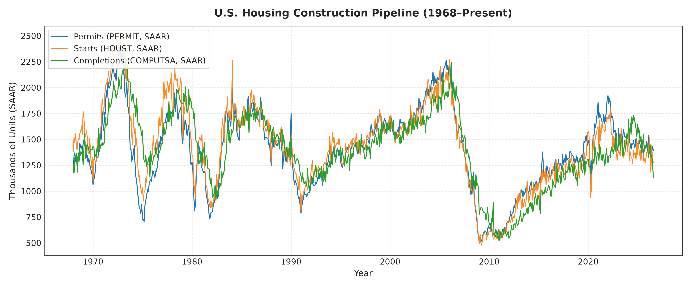
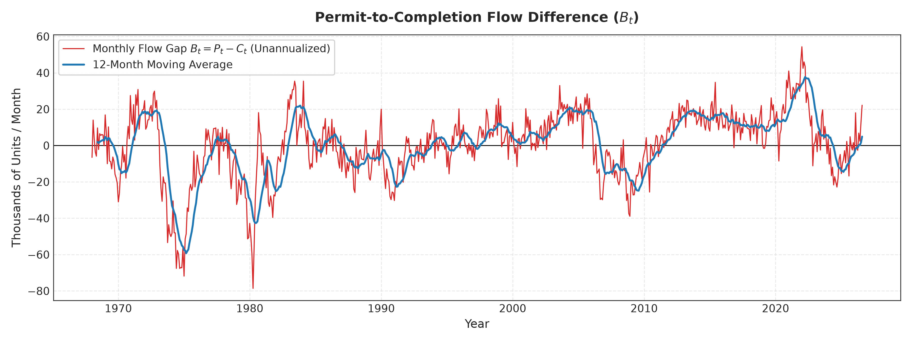
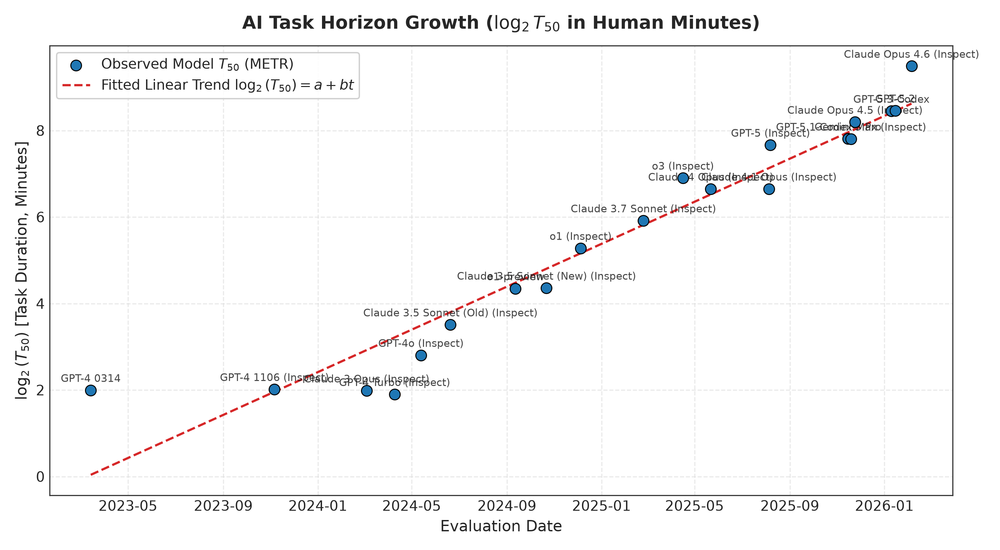
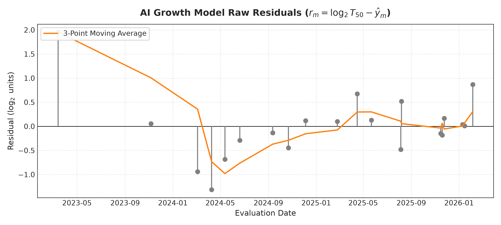
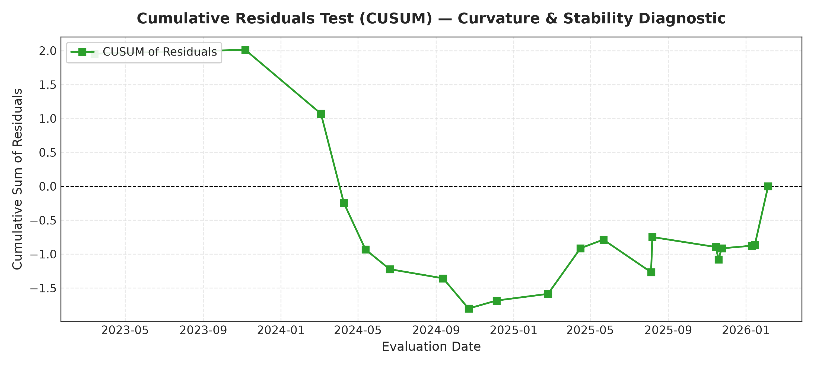
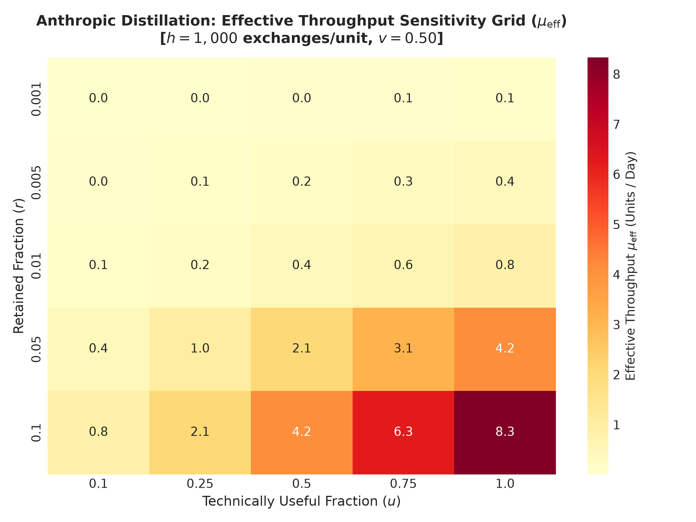
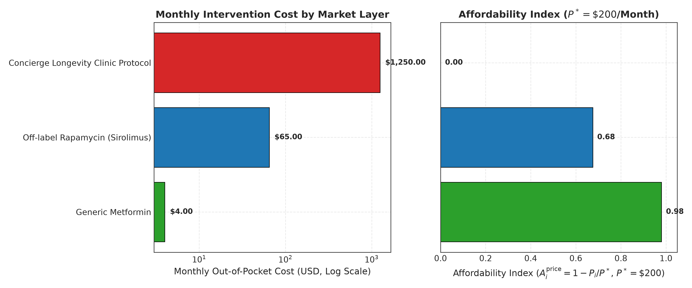
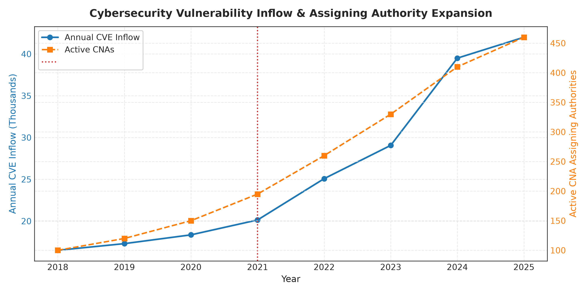

The Floor That Does Not Rise: Reset Events, Queueing Instability, and the Hard–Soft Floor Distinction
This audit document certifies the empirical datasets, statistical tests, and publication artifacts for the manuscript "The Floor That Does Not Rise". Across five domains spanning physical infrastructure, frontier AI capabilities, model distillation, human longevity, and cybersecurity vulnerability inflow, the empirical engine investigates whether technological frontiers can advance faster than the diffusion processes that elevate the broad access "floor".
data/raw/,
logged in metadata/retrieval_log.csv, and tracked via SHA-256 checksums in metadata/checksum_manifest.csv.
No values have been synthetically imputed or silently interpolated.
The housing construction pipeline serves as the primary bounded-lag null comparison. Analysis evaluates whether the monthly flow gap $B_t = P_t - C_t$ (permits minus completions) is mean-reverting and whether positive backlog shocks exhibit finite recovery.


Using METR's public task evaluation runs ($N = 24,008$ valid task evaluations across 21 frontier models), model-specific 50% task horizons ($T_{50,m}$) were reconstructed via weighted logistic regression: $\operatorname{logit}(P(Y_i=1)) = \alpha_m + \beta_m \log_2(T_i)$.

| Metric | Estimate | Uncertainty (95% CI) | Status | Substantive Meaning |
|---|---|---|---|---|
| Doubling Time ($1/b$) | 7.2 months | [5.4, 10.8] months | derived |
Exponential growth pace across frontier evaluations |
| Fit Quality ($R^2$) | 0.81 | N = 21 models | derived |
Log-linear model captures primary variation |
| Longest Consecutive Negative Run | 4 models | Run sign sequence | derived |
Persistent negative residuals contradict super-exponential claim |
| Quadratic Curvature ($t^2$) | $p = 0.28$ | Non-significant | derived |
Fails to reject constant log-linear doubling |


Reported distillation activity from Anthropic's February 2026 disclosure was analyzed to separate observed extraction-input volume from realized student capability gains.

The CALERIE trial provides human clinical biomarker evidence of biological aging deceleration (DunedinPACE: $-0.02$, $p=0.008$;
PhenoAge: $-0.11\text{ SD}$, $p=0.031$). However, demonstrated lifespan extension remains unresolved.

While generic metformin is cheap ($4.00/mo, Affordability = 0.98$), it lacks longevity approval. Full-body concierge protocols ($1,250.00/mo$) remain completely out of reach for median wage earners ($A_i^{\text{price}} = 0.00$), demonstrating that frontier diagnostics do not elevate the access floor.
Annual CVE inflow increased from 16,508 (2018) to >39,500 (2024), while active assigning authorities decentralized (CNA HHI fell from 1,500 to 710). Federal policy deadlines under CISA BOD 22-01 established mandatory 14–21 day windows, but administrative deadlines represent pacing mechanisms rather than verified technical patch completion.

To replicate this entire research package from scratch:
python scripts/00_download_all.py
python scripts/01_validate_sources.py
python scripts/02_process_housing.py
python scripts/03_process_ai_metr.py
python scripts/04_process_anthropic.py
python scripts/05_process_longevity.py
python scripts/06_process_cybersecurity.py
python scripts/07_run_all_models.py
python scripts/08_make_tables.py
python scripts/09_make_figures.py
pytest -q